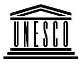
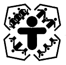

UNESCO and Early Childhood and Children's Rights
Principle for action
Learning begins at birth (Article 5 - 1990 Jomtien
World Declaration on Education for All)
Early childhood care and education (ECCE) is an integral part of basic
education and represents the first and essential step in achieving the
goals of Education-for-All. The learning capacity and value orientations
of children are largely determined by the time the child reaches the age
of formal schooling. For this reason, any sustained effort in Education
for All must set targets and programmes for early childhood development
and attempt to raise the life-skills level of families, who are the
primary educators of children. Well conceived quality early childhood
programmes help meet the diverse needs of young children during the
crucialearly years of life, enhance their readiness for schooling, have a
positiveand permanent influence on later schooling achievement and are a
major entry point for family education programmes.
UNESCO and early childhood
UNESCO intervenes at inter-agency and intergovernmental levels and assists
governments in:
- preparing children for schools and schools for children by encouraging
and promoting respect for the young child's natural, learning process;
- forging links at national level between the primary education system and
early child development programming.
- undertaking sub-sectoral studies of the situation of young children and
families, and formulating national and regional programmes for early
childhood care and education.
- encouraging research leading to practical action and policy making in
favour of young children and families.
- identifying and supporting first-class universities and institutes which
will research national child and family needs and train high-level
personnel to plan and animate national or regional policies.
- supporting pilot early childhood and family development projects that
stress women's education.
- promoting legislation on behalf of children and families, in particular
the Convention on the Rights of the Child.
In addition, UNESCO in keeping with its educational, scientific and
cultural mandate:
- acts as a networking and clearing centre for information and briefings
on early childhood.
- collaborates in artistic, intellectual and cultural events promoting
reflection on childhood and family issues.
UNESCO and the Convention on the Rights of the Child
The Articles of the Convention which present a particular challenge to
UNESCO are those dealing with educational (Articles 27, 28 & 29) and
cultural (Articles 12, 13, 14, 17, 28, 29, 30 and 31) rights.
UNESCO promotes the Convention on the Rights of the Child by:
- acting as a focal point for enquiries concerning the Convention, sending
out literature and attempting to attend the more important meetings on the
Convention convened by the United Nations and NGOs;
- providing assistance to the UN Commission on the Rights of the Child in
monitoring the Convention, in particular as it relates to education and
culture.
- helping to translate the Convention into national languages.
- contracting original materials on the Convention, especially
publications and booklets prepared for or by young children.
- assisting governments and non-governmental organizations in publishing
children's versions of the Convention and guidebooks for teachers.
- co-sponsoring meetings on the Rights of the Child with the International
Institute for Human Rights Studies (Trieste), the Centre for Human Rights
(Geneva), the Arab Institute of Human Rights.
- co-operating with UNICEF on matters pertaining to the Convention, within
the framework of early childhood education.
- supporting the work of the Paris NGO Group on Protecting Children in
Warfare.
For further information, contact:
John Bennett, Co-ordinator or
Bernard Combes, Information/Documentation Specialist
UNESCO's Young Child and the Family Environment Unit,
ED/BAS/YCF, UNESCO
tel. (33-1) 45 68 08 15 / 06 86 fax (33-1) 40 65 94
057 Place de Fontenoy,
75352 Paris 07 SP France.